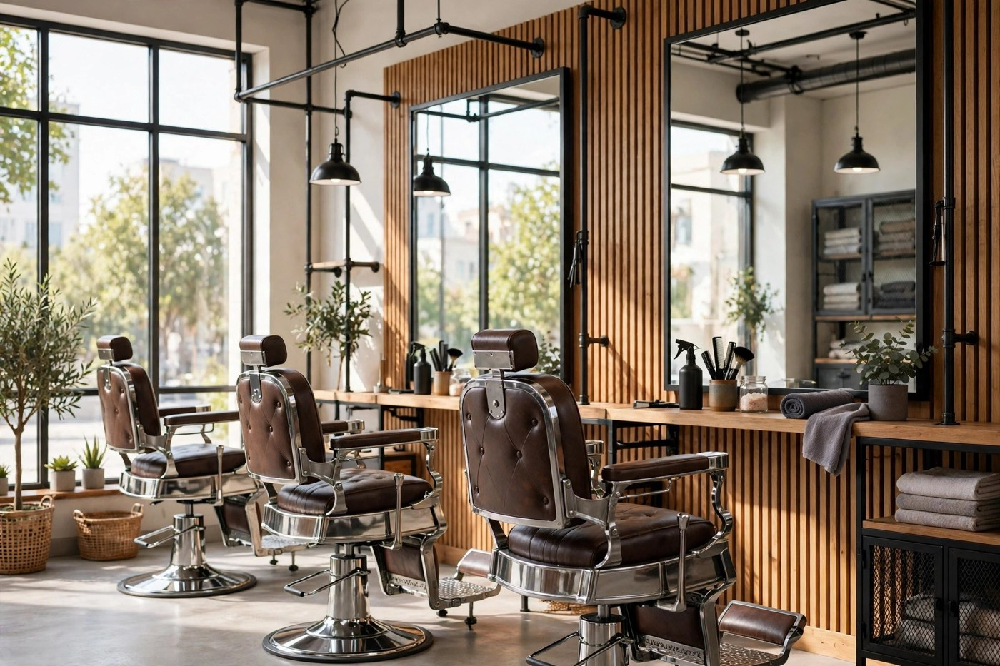
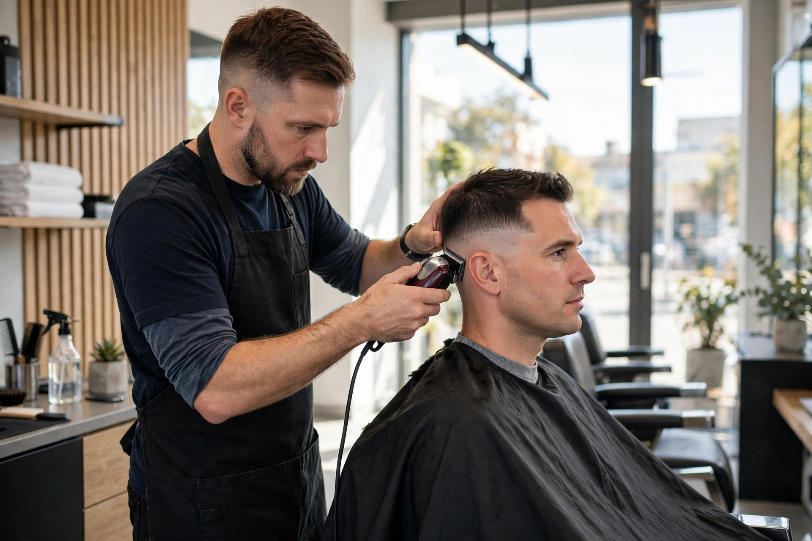
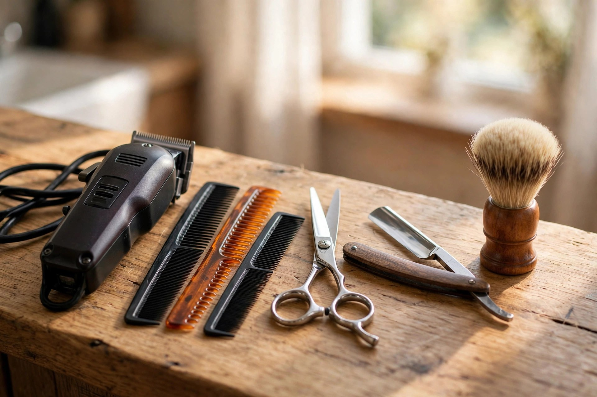

Precision haircuts
Clean, sharp cuts tailored to your style — from classic to modern.

Charlotte, NC · Barbershop on Back Creek Dr
Fades, beard trims and kids cuts — rated 4.6 from 21 reviews on BestProsInTown.
What we do
Clean, sharp cuts tailored to your style — from classic to modern.
Seamless blends and crisp fades, finished with a razor-sharp lineup.
The full package — cut, beard sculpting and hot-towel finish.
Patient, careful cuts for young gentlemen — first-timers welcome.
Precise hairline enhancement for an extra-crisp, defined finish.
A relaxing steamed facial to finish your visit feeling fresh.

Why choose us
Blendsorial is built on one thing: flawless fades. Walk in, sit down, and leave sharper than you came.
In the studio

Word on the street
from 21 reviews on BestProsInTown
Good to know
Yes — walk-ins are welcome every day. Call (704) 817-7044 ahead on Saturdays to skip the wait.
Yes — patient, careful kids cuts are one of our specialties.
A precise hairline enhancement for an extra-crisp finish — ask your barber if it's right for you.
Monday – Thursday 9 AM – 7 PM, Friday 7 AM – 7 PM, Saturday 7 AM – 4 PM, Sunday 12 – 4 PM.
Come see us